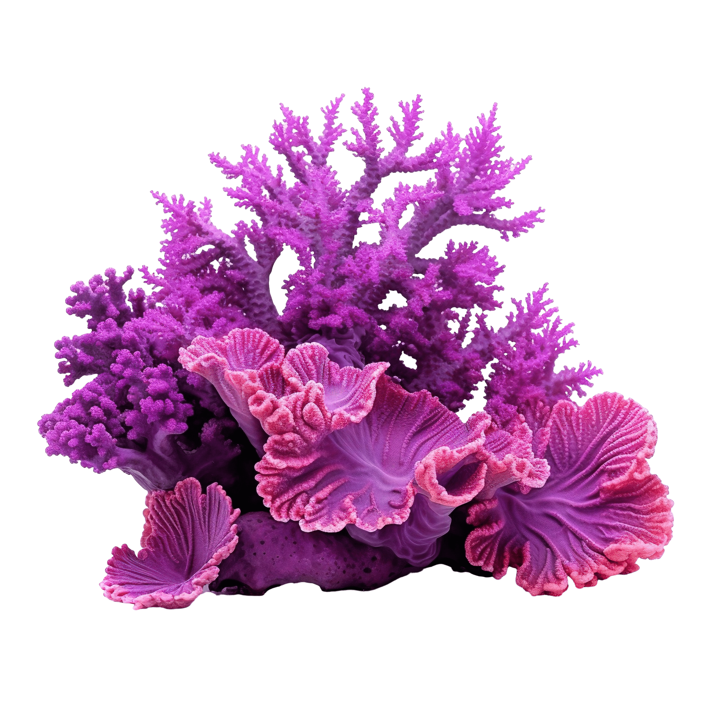

Game Over
Pacific Ocean Ecosystem Interactive Display
Temperature Rise Simulation
Temperature Rise: 0°C

0°C
Coral Coverage
0%
Decline
Normal Conditions - Healthy Coral Reef Ecosystem

0°C
Fish Abundance
0%
Decline
Healthy Coral Reef Habitat - Rich Marine Biodiversity
0 m
Surface
Epipelagic Zone (0-200m)
Abundant sunlight, highest biodiversity
 Oceanic Whitetip Shark
Oceanic Whitetip Shark
 Giant Oceanic Manta Ray
Giant Oceanic Manta Ray
 Reef-Building Coral
Reef-Building Coral
Mesopelagic Zone (200-1000m)
Twilight zone with bioluminescent phenomena
 Devil Ray
Devil Ray
 Deepwater Shark
Deepwater Shark
 Deepwater Seahorse
Deepwater Seahorse
Bathypelagic Zone (1000-4000m)
Complete darkness, extreme pressure
 Scaly-foot Snail
Scaly-foot Snail
 Hydrothermal Vent Mollusc
Hydrothermal Vent Mollusc
 Deep-sea Crustacean
Deep-sea Crustacean
Hadal Zone (4000-11000m)
Deepest trenches, life at the limit
 Endemic Hydrothermal Vent Shrimp
Endemic Hydrothermal Vent Shrimp
 Hadal Snailfish
Hadal Snailfish
 Hadal Microbial Community
Hadal Microbial Community
Ocean Exploration Game
Score: 0
High Score: 0